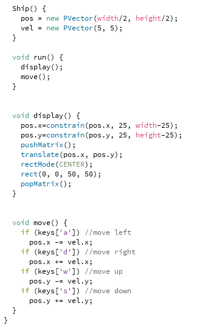
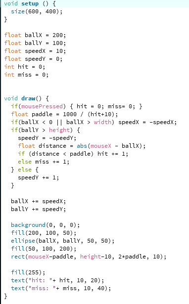
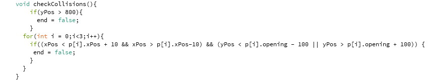
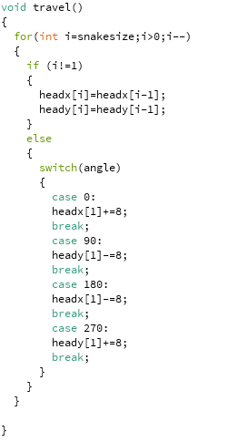

-
Interactive touch walls at the wiseman aquarium
Creator: Greensboro Science Center
Greensboro science center heeft dit project gemaakt doormiddel van ubi-camera’s en software te gebruiken. Deze technologie creëert een magische meeslepende ervaring. Ook is dit project geschikt om met grotere groepen te gebruiken. De projectie is van vloer tot plafond, en kan door de technologie op meerdere plekken tegelijk op muur gebruikt worden door verschillende personen. Het bijzondere aan dit project is dat de hele muur interactief is en je in een avontuur meeneemt door gebruik te maken van verschillende animaties.
-
Interactive gift wall
Creator: UAU
Dit project is gemaakt door UAU, dat is een Bedrijf gevestigd in São Paulo in Brazilië. Wat dit project zo bijzonder maakt, is dat je op een interactieve manier mee kan doen aan een vragen ronde en daarbij prijzen kan winnen. Dit project maakt gebruik van 4 technologieën, namelijk: projection mapping, capacitive sensors, touch screen en een automaat. De gebruiker wordt van tot eind meegenomen in een verhaal, doormiddel van animaties. Uiteindelijk eindigt de gebruiker bij de automaat met een scherm, waarop hij of zij deel kan nemen aan een quiz en afhankelijk van zijn of haar antwoord een cadeau krijgt.
-
The Swedish speed camera lottery
Creator: Kevin Richardson
Dit project is gemaakt door Kevin Richardson die mee deed aan een wedstrijd van Volkswagen. Kevin kwam met het idee om een camera te maken die bij een kruispunt staat. Als een bestuurder die voorbij komt in de auto te hard rijdt dan krijgt de bestuurder een bekeuring die hij moet betalen. Het geld dat die bekeuringen opbrengt wordt in een prijzenpot voor een loterij gestopt, waar de mensen die niet te hard rijden aan mee konden doen en zo dus een prijs winnen. Ik vind dit een gaaf idee, dat mensen stimuleert om minder hard te rijden, waardoor er hopelijk minder ongelukken ontstaan.
Playful interaction
Research
Tinkering
-
Object bewegen
Als basis vond ik het handig om te leren hoe je een object kan besturen met de knoppen w, a, s, d. Ik heb een wit vierkant gemaakt, die te besturen is met deze knoppen. Uiteindelijk is dit het resultaat geworden:
 -
Hooghoud spel
Als tweede demo heb ik een hooghoud spel gemaakt. Ik kwam een tutorial hiervan tegen online en ik dacht dit moet ik maken. Ik vind het een simpel maar leuk spel, waarin je gemakkelijk kan verdwalen. De bedoeling van het spel is om met het plateau de bal terug te kaatsen. Elke keer dat je dit doet gaat er punt bij en wordt het plateau kleiner. Raakt de bal de grond en niet het plateau dan de miss teller omhoog. Het spel kan ook herstart worden door op de muis te klikken. Hieronder is het uiteindelijke resultaat te zien:
 -
Flappy bird
Als laatste demo heb ik een spel gemaakt dat ik vroeger veel gespeeld heb, namelijk flappy bird. Het doel van het spel is simpel, maar hoe verder je komt hoe moeilijker het wordt. In het spel zijn pilaren waar je met het balletje door heen moet. Het balletje kan omhoog door op een toets of op de muis te drukken en gaat door de zwaarte kracht weer automatisch naar beneden. Ik heb dit gemaakt met behulp van het volgen van een tutorial. Uiteindelijk is dit het resultaat geworden:
Hierboven is een stuk code te zien waar gecontroleerd wordt of de vogel de pilaren raakt.
Eindopdracht
-
Snake
Als eindopdracht heb ik toch wel het beroemde spel dat al op de oude nokia’s te spelen was, namelijk Snake. Snake is een simpel spel, maar het kan mensen uren vermaken en maar weinig wensen kunnen het uitspelen. De bedoeling van snake is om de appels op te eten en zo lang mogelijk te worden.
Ik ben begonnen met het maken van de snake zonder dat hij langer werd. Daarna ben ik aan de beweging begonnen, zodat de slang binnen het vierkant kan bewegen.
Vervolgens heb ik gemaakt dat de slang de appels op kan eten en langer wordt.
En als laatste stap heb ik gemaakt dat het spel stop als de slang tegen de muur of zichzelf op botst. Hieronder is het resultaat te zien:
Hierboven is een stuk code, waarin de functie om te bewegen beschreven wordt.
Reflectie
-
Het onderwerp playful interaction is iets wat mij interesseert. Toen ik begon met research doen verdwaalde ik in google, omdat er zoveel leuke projecten te vinden waren. De projecten die ik tegen kwam verbaasde mij stuk voor stuk. Ik ben ook van mening dat dit erg populair wordt of zelfs al is. Ik vond het overigens wel lastig om zelf projecten verzinnen om te maken die in het echt gebruikt konden worden, waardoor ik meer op spelletjes uitgekomen ben.
Uiteindelijk ben ik tevreden met mijn eindproduct en de opdrachten die ik daarbij gemaakt heb. Het enige dat ik jammer vond is dat het niet iets is wat in het echte leven gebruikt kan worden. Ook al is het niet te gebruiken in het echte leven, ben ik alsnog blij met het resultaat.